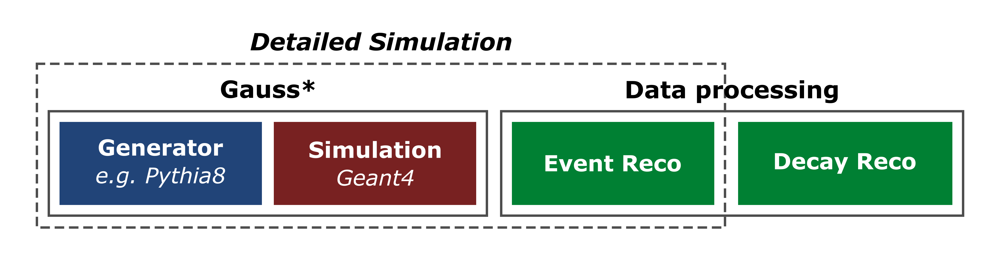
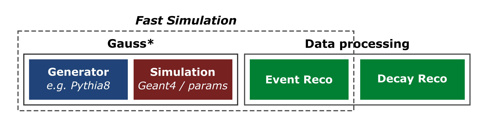
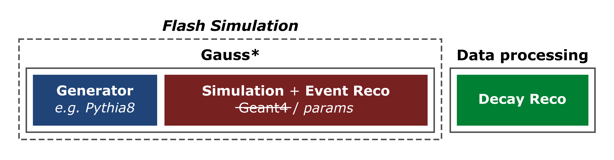
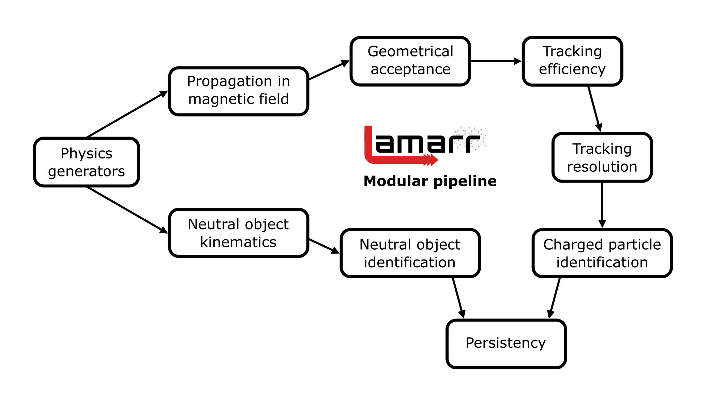
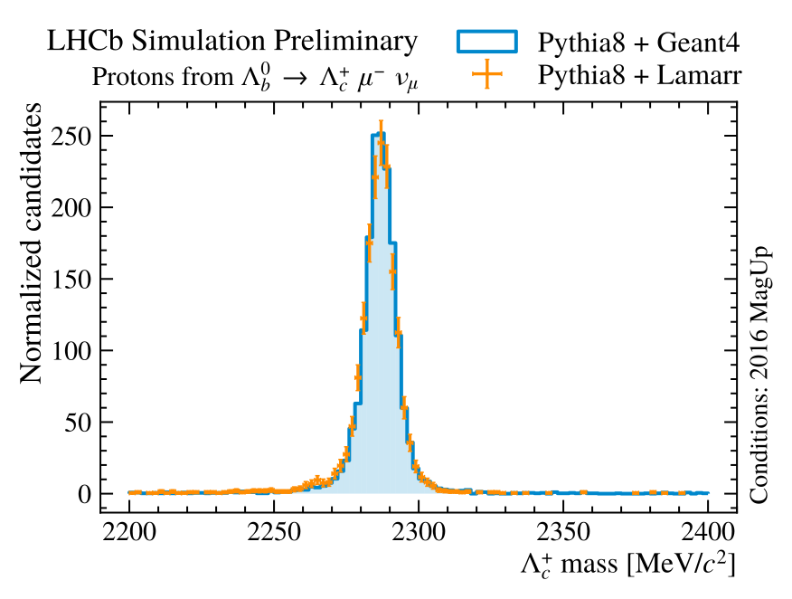
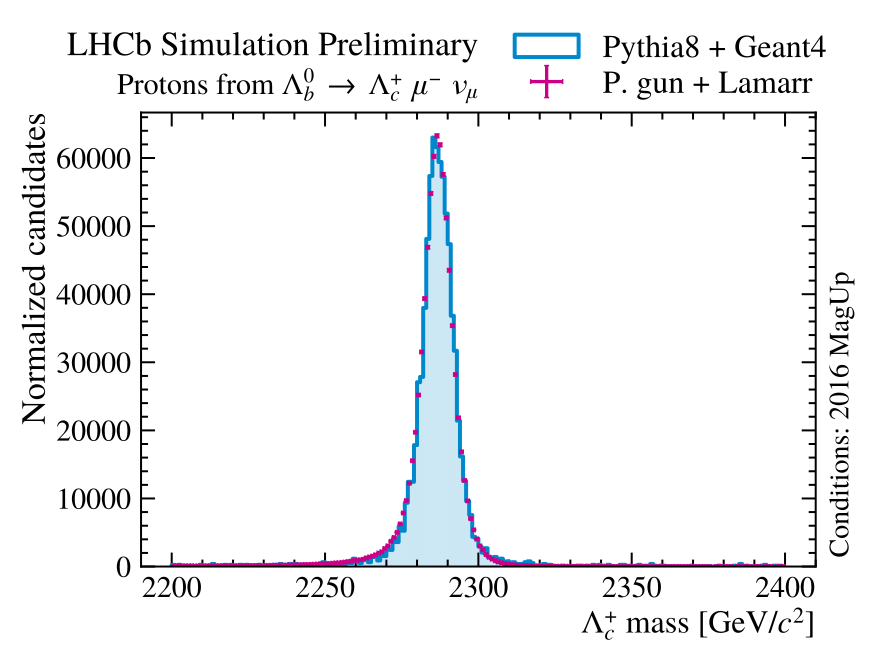

The detailed simulation of the interaction between the traversing particles
and the LHCb active volumes is the major consumer of CPU resources. During the LHC Run 2, the
LHCb experiment has spent more than 90% of the pledged CPU time to produce
simulations. Matching the upcoming and future demand for simulated samples make unavoidable
the upgrade of the current technologies developing faster simulation options.
2. Fast simulation VS. flash simulation

Traditional data processing flow at LHCb.

Fast simulation techniques aim to speed up the Geant4-based
simulation production by parameterizing the energy deposits.

Flash (or Ultra-Fast) simulation
strategies directly transform generator-level particles into analysis-level reconstructed objects
3. What is Lamarr?
Lamarr is the novel flash-simulation framework of LHCb, able to offer the
fastest option for simulation. Lamarr consists of a pipeline of (ML-based) modular
parameterizations designed to replace both the simulation and reconstruction steps.

The Lamarr pipeline can be split in two chains:
a branch treating charged particles relying on tracking and particle identification
models
a branch facing the particle-to-particle correlation problem innate in the neutral
objects reconstruction
4. ML-based models for charged particles
Efficiency models:Deep Neural Networks trained to perform classification
tasks so that they can be used to parameterize the fraction of “good” candidates (e.g., accepted,
reconstructed, or selected)
High-level quantities: Conditional Generative Adversarial Networks
(GAN) trained on either simulated or calibration data to synthetize the high-level response of
LHCb sub-detectors.
5. Model deployment within Gauss
Best-performing parameterizations can easily replace specific modules without recompiling the whole
pipeline using the deployment tool scikinC.
scikinC translates ML-based models to be dynamically linked to the
main application (Gauss). In this way, parameterizations can be developed and released
independently.
Train a model;
Transpile the model to a C file with scikinC;
Compile the C file to a shared object;
Link the shared object to the LHCb simulation software;
Produce simulated samples.
6. Validation campaign
Lamarr is currently under validation, comparing the distributions of the analysis-level
reconstructed quantities parameterized with what obtained from detailed
simulation for \(\Lambda_b^0 \to \Lambda_c^+ \mu^- X\) decays with
\(\Lambda_c^+ \to p K^- \pi^+\).
Decay abundantly produced in the LHCb acceptance, widely studied, and also utilized as PID calibration sample;
It is described by a complex decay model including many feed-down modes;
It provides examples for muons, pions, kaons and protons in a single decay mode.


\(\Lambda_c^+\) mass obtained from Pythia8 (left) and Particle Gun (right) generators by
Lamarr against detailed simulation. Reproduced from
LHCB-FIGURE-2022-014.
7. Results: Tracking system
The momentum and the point of closest approach to the beams at generator-level get
smeared: GAN-based model is used to parameterize multiple scattering and
residual detector effects (alignment, calibration).
Track reconstruction uncertainties rely on dedicated GAN-based model.
Correct modeling track uncertainties is essential for LHCb analyses: e.g., the
impact parameter (IP) is a common discriminator between prompt and displaced vertices.
Output quantities can be used within LHCb offline reconstruction to compute higher-level
quantities, like the reconstructed mass.
Proton impact parameter (IP) \(\chi^2\) obtained from Pythia8 (left) and Particle Gun (right)
generators by Lamarr against detailed simulation. Reproduced from
LHCB-FIGURE-2022-014.
8. Results: PID system
Smeared track kinematics and detector occupancy are used by two sets of
GAN-based models to parameterize the high-level response of the RICH and
MUON systems.
Further GAN-based models are trained to reproduce the higher-level PID classifiers
typically used in physics analyses, relying only on the input and the output of RICH and
MUON parameterizations.
The adopted stacked GAN structure is designed to simulate both single-system
detector response (RICH and MUON) and higher-level PID classifiers, enabling analysts to define
new higher level classifiers based on the underlying basic quantities.
Proton identification efficiency obtained from Pythia8 (left) and Particle Gun (right)
generators by Lamarr against detailed simulation. Reproduced from
LHCB-FIGURE-2022-014.
9. Timing performance
Overall time needed for producing simulated samples has been analyzed for fully detailed simulation
(Geant4-based propagation) and Lamarr. Lamarr timing is dominated by particle generation (Pythia8).
Preliminary studies show that Lamarr ensure a CPU reduction of at least 98% for
the physics simulation phase. Further improvement in timing can be achieved tacking the generation,
as shown when using Particle Guns (e.g. only generating signal of interest).
Great progress has been made on developing a fully parametric simulation
of the LHCb experiment, aiming to reduce the pressure on the CPU computing resources.
Model development, tuning and specialization will continue taking full advantage of
opportunistic GPU resources made available to the LHCb Collaboration.
Further speed improvements under study;
Thread safety for multithreaded Gaudi algorithms under development.